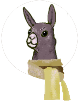
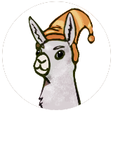

About PROJECT: Knittable
PROJECT: Knittable got its start as the capstone project for a coding bootcamp. The primary developers are:

Molly
The knitter on the team, Molly came up with the initial idea for PROJECT: Knittable. When she isn't coding or knitting, she enjoys riding her bike, playing with her dog, and cheering for the Sounders.

Tosi
The Llamist of PROJECT: Knittable. Jack-of-all trades, Master of Llamas.

Philip
The powerhouse behind the look of PROJECT: Knittable! When he isn't in front of a computer, Philip...
Tosi
The Llamist of PROJECT: Knittable: Tosi.
Jack-of-all trades, Master of Llamas. He fearlessly navigates alongside his companions to fashion a World where everything shall be mended and made 'Knittable’.